Un plan de 30 días, 10 minutos al día, con 90 fichas listas para imprimir: de las vocales a las primeras frases y su primer cuento.
PDF · Descarga inmediata · Garantía de 7 días
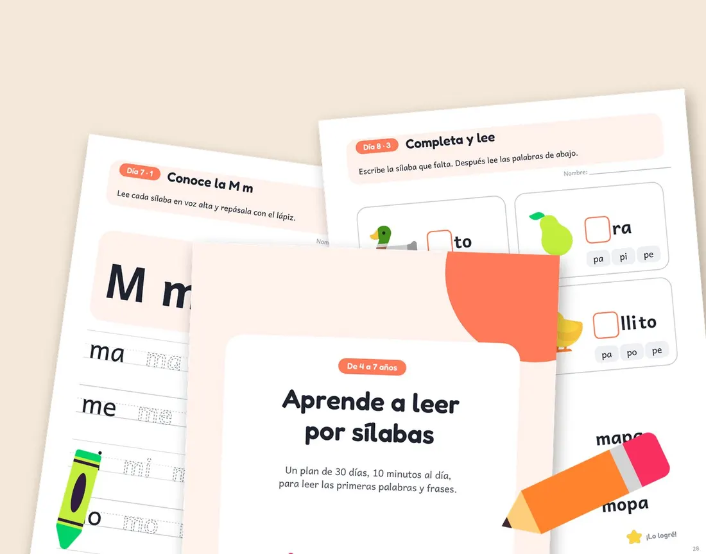
Este cuaderno resuelve el orden y la preparación por ti. Solo imprimes las fichas del día y se sientan juntos 10 minutos.
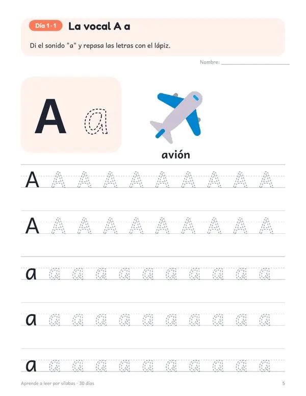
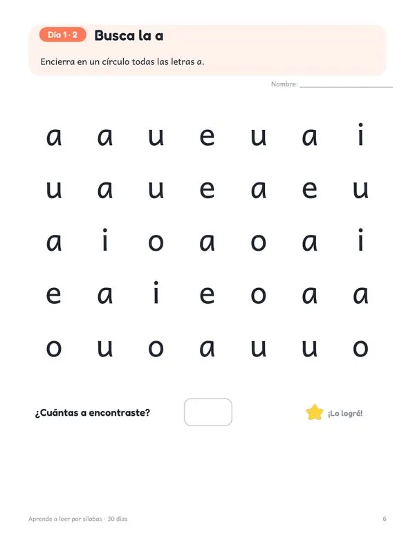
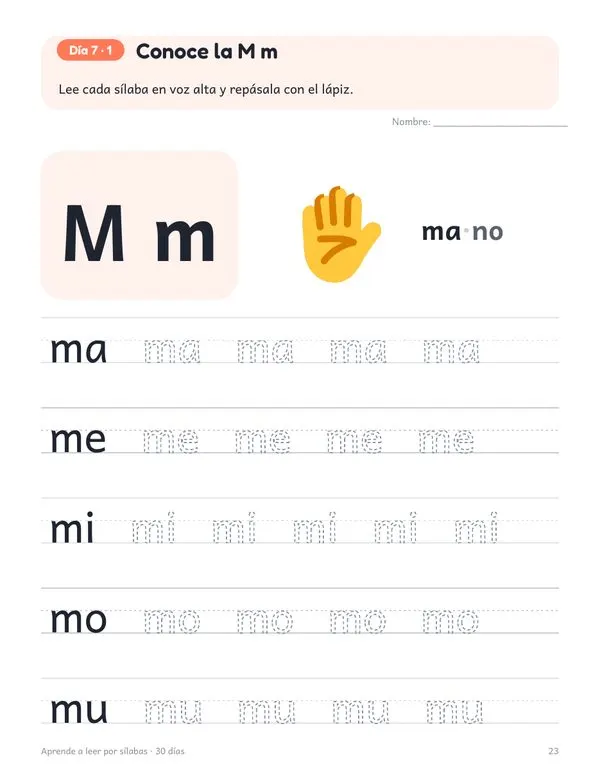
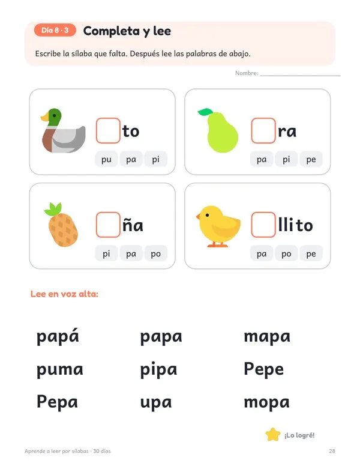
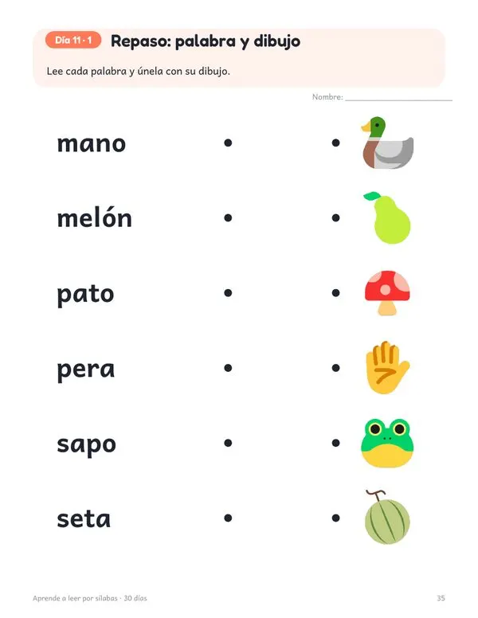
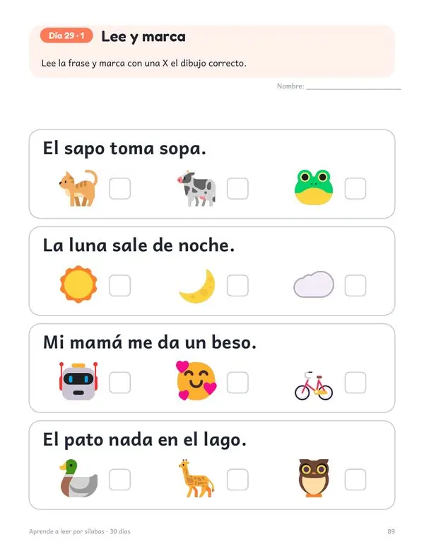
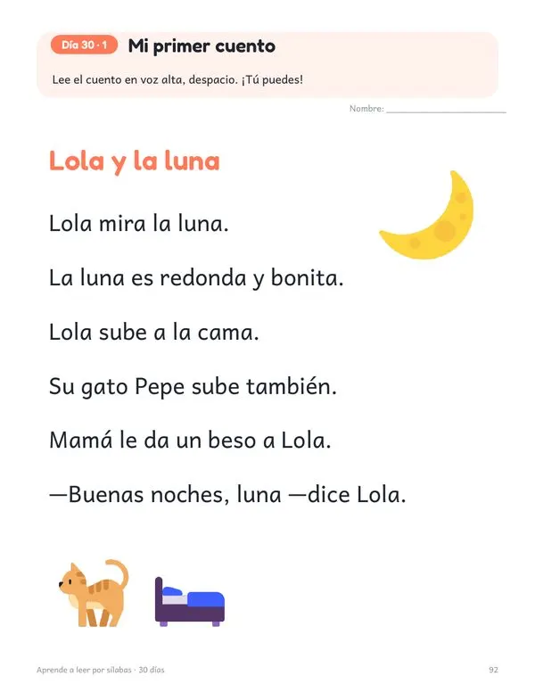
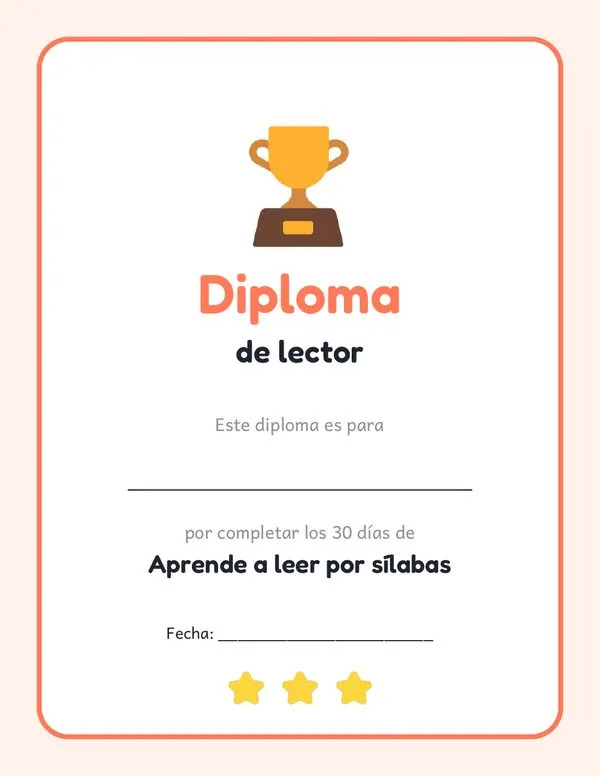
Las vocales: a, e, i, o, u.
Primeras sílabas con m, p, s, l.
Sílabas con t, n, d, r, c, b.
f, g, j, v, ñ, ll, ch, frases y el primer cuento.
El método va de lo simple a lo complejo: primero el sonido de cada letra, después la sílaba (m + a = ma) y luego la palabra (ma·no). Si un día cuesta, se repite.
Pago único
US$ 7
Al pagar verás el precio convertido a tu moneda.
Acceso inmediato por correo. Pagos procesados de forma segura por Hotmart.
En la página de pago podrás sumar, si quieres, estos cuadernos a precio especial:
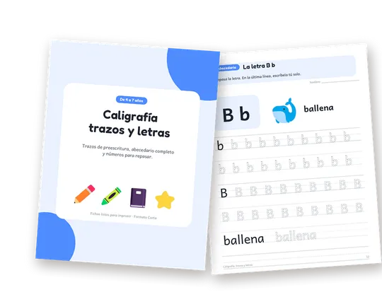
Trazos de preescritura, abecedario completo y números.
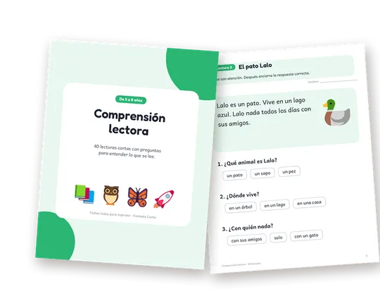
40 lecturas cortas con 3 preguntas cada una.
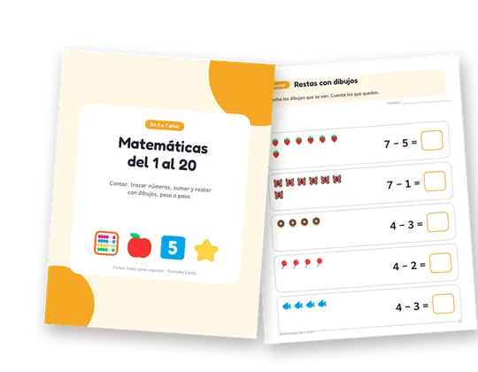
Contar, trazar números, sumas y restas con dibujos.
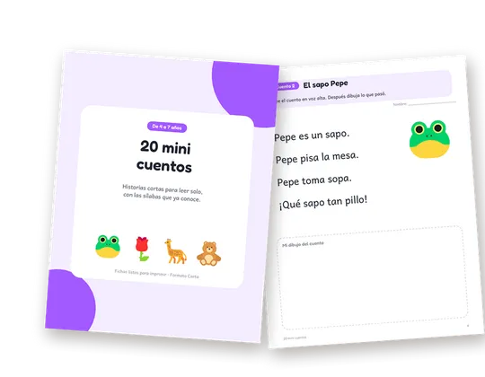
Historias cortas para leer con las sílabas aprendidas.
Si el cuaderno no es lo que esperabas, pides el reembolso dentro de los 7 días desde la Hotmart y te devolvemos el 100% del pago.
No. Es un archivo PDF que descargas e imprimes en casa o en una papelería.
Apenas se confirma el pago, la Hotmart te envía un correo con el acceso. Si no lo ves, revisa la carpeta de spam o promociones.
Está hecho en tamaño Carta. En hoja A4 también funciona: elige "ajustar a la página" al imprimir.
No. Las fichas se ven bien en blanco y negro.
Sí, todas las veces que necesites para tus niños o tu grupo. Lo que no está permitido es revender o compartir el archivo.
Sí. Pueden empezar directo en la semana 2, con las primeras sílabas.
No. Cada ficha dice qué hacer y el cuaderno trae dos páginas de guía para los papás.
Con tarjeta y con los medios de pago locales que la Hotmart ofrece en tu país.